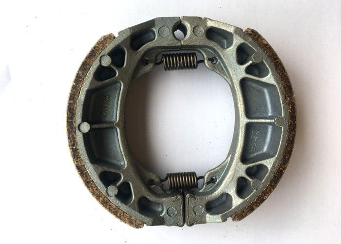
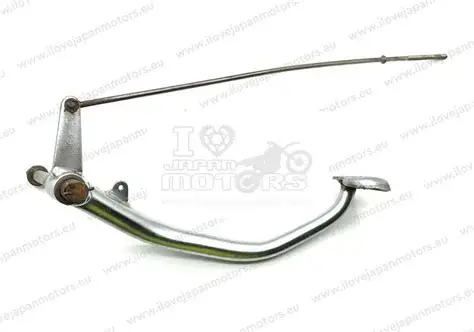
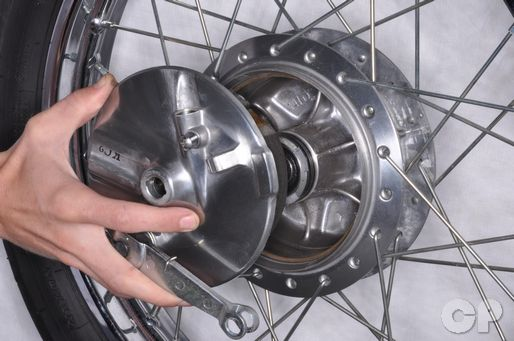
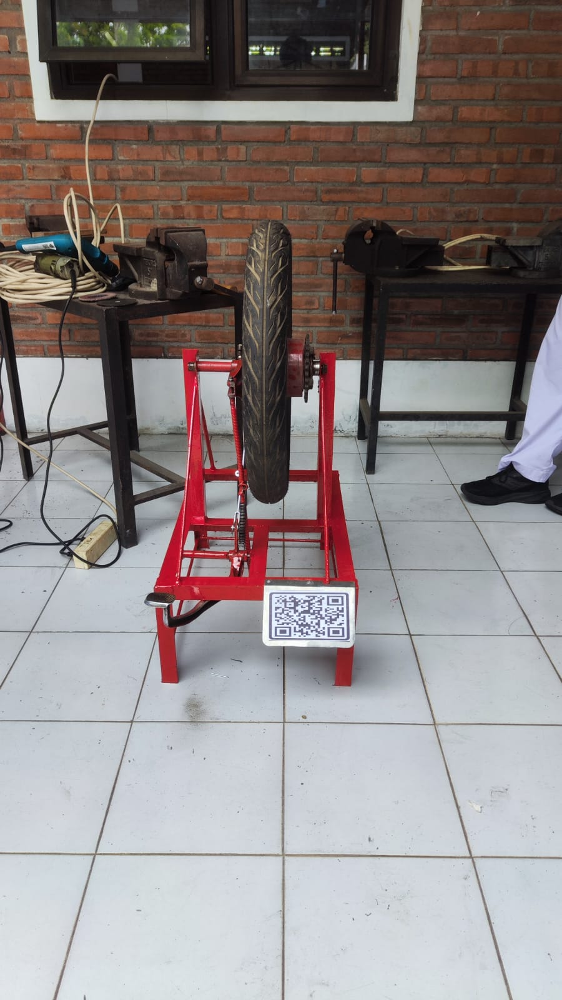

Pelajari mekanisme, komponen, dan cara kerja sistem pengereman mekanis melalui alat peraga fisik (trainer) adaptasi Honda GL-Pro.
Sistem rem tromol menggunakan metode gesekan antara kampas rem (sepatu rem) dengan bagian dalam tromol yang berputar. Karena berbasis mekanis murni, sistem ini mengandalkan gaya tarik dari kawat atau batang baja (Brake Rod) tanpa menggunakan fluida hidrolik.
Catatan: Panas yang dihasilkan dari gesekan ini harus dibuang dengan baik agar rem tidak mengalami fading (blong akibat panas).
Pedal rem diinjak, menarik Batang Penarik (Brake Rod) ke depan.
Paha Rem (Brake Lever) ikut tertarik dan memutar poros Nok (Brake Cam).
Putaran Nok memaksa kedua Sepatu Rem (Brake Shoes) mekar ke luar.
Gesekan kampas dengan dinding Tromol menahan laju roda.
Klik gambar untuk memperbesar

Brake Shoe

Pedal & Brake Rod

Brake Drum

Trainer
Jawab pertanyaan di bawah ini untuk menguji pemahaman Anda tentang materi rem tromol.
Nilai Akhir Anda: